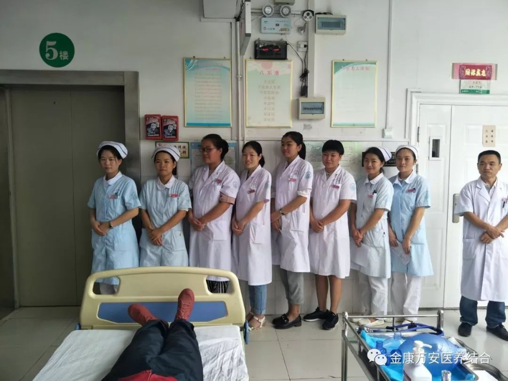
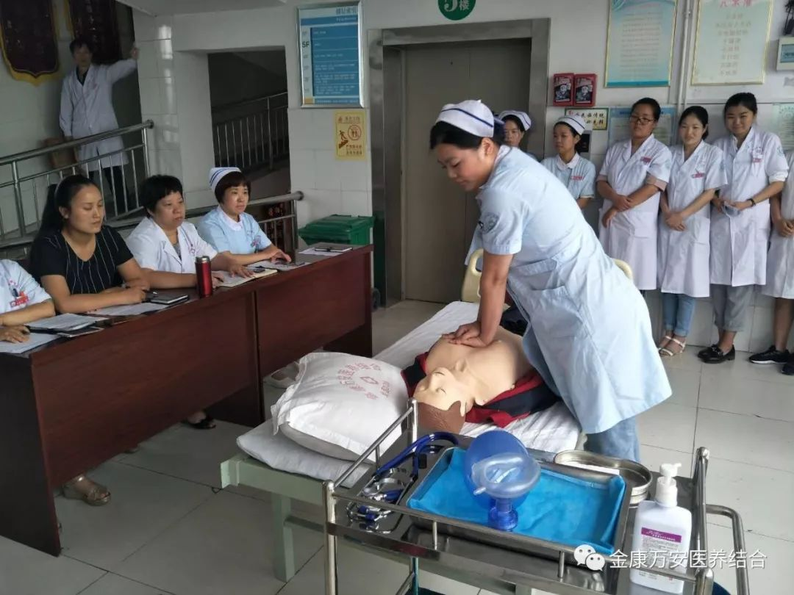
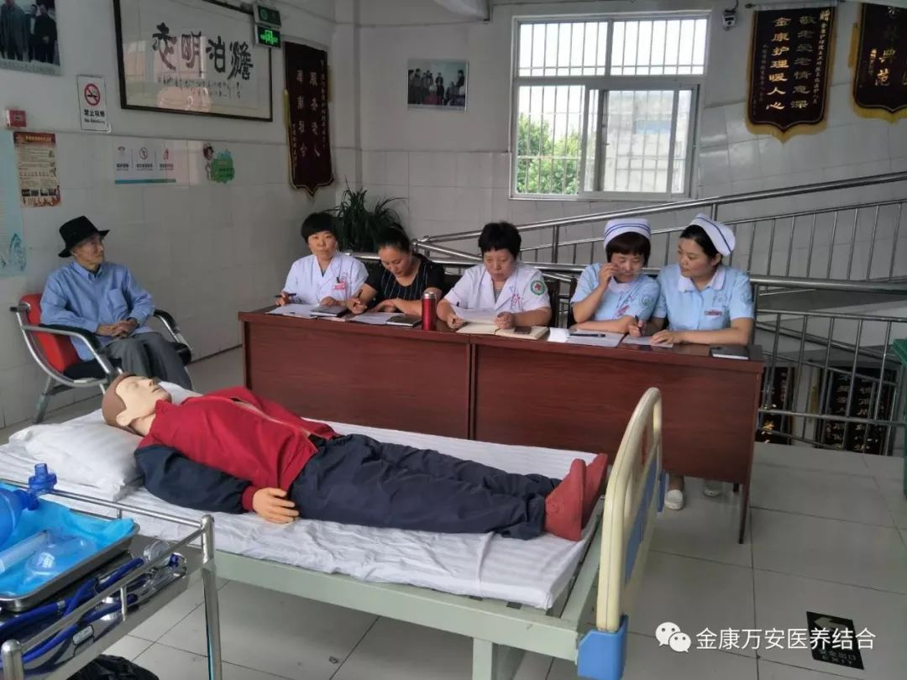
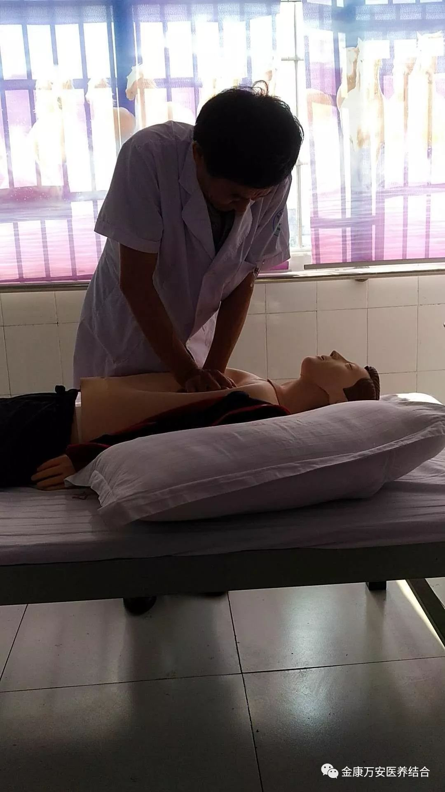
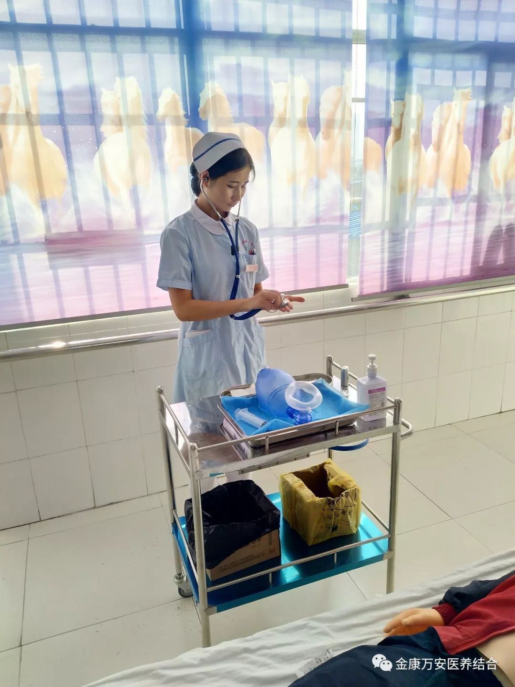
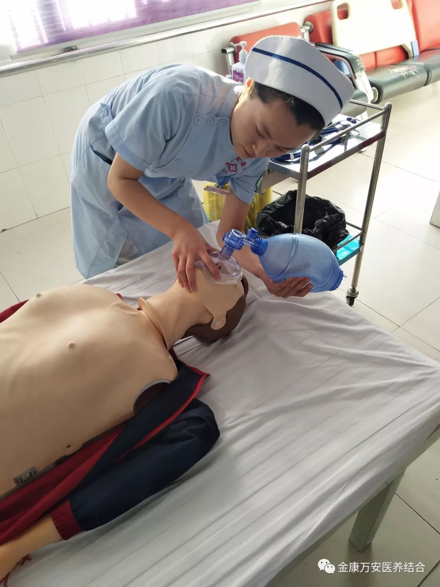

为了夯实我院医学基础，进一步规范临床技术操作，激发全院医务人员工作热情，塑造我院良好形象，为患者提供满意的医疗护理服务。漯河金康护理院、万祥街社区卫生服务站于2018年6月19日、20日下午，由业务院长张莉主持，医务科护理部积极配合，在五楼大厅内举行了医护人员第二季度技能考核。本次考核内容是单人徒手心肺复苏技术，住院部护士长王景睿以准确、熟练的操作流程、标准娴熟的动作，给每一位家人进行了示范演练，使在场的每一位家人赞叹不已。
在备赛区等候的部分医护人员
王护士长给大家做动作示范
在本次考核过程中，每个科室的家人们都积极参加，认真对待本次考核，经过激烈的角逐，涌现出了一批表现突出的部分家人，她们气质非凡，操作流程正确，动作娴熟，并取得了优异成绩。
  通过本次考核，在全院范围内营造了“学业务、比技术、重素养”的良好氛围，充分调动了大家积极性，同时也强化了大家的基本功训练，夯实了基础知识、基本技能，并达到在工作中能够熟练掌握和娴熟运用的目的。
下一步我院将不定期进行专业知识学习与考核，不断巩固知识水平，提升医院医护人员的综合素质和服务水平，以便更好的为老人和患者服务。